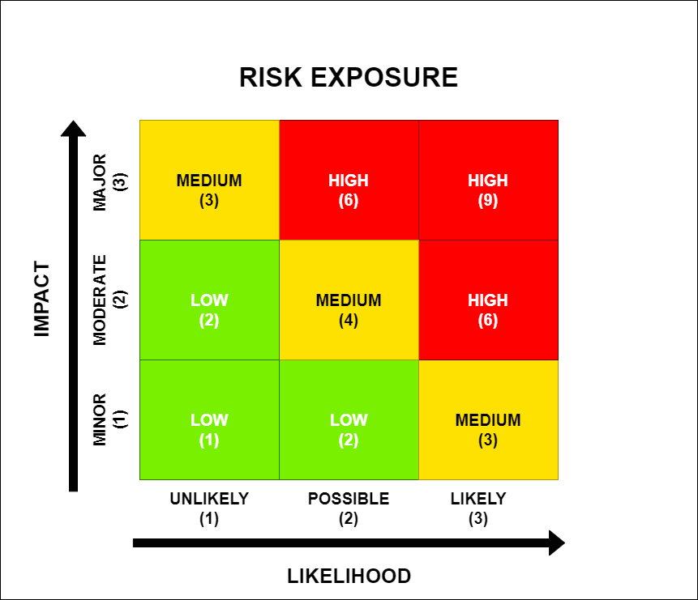

Open at the end
A Process
Overview
Transitioning from a private to a public repository is slightly more complicated than coding in the open from the beginning. However that shouldn’t stop you from exploring the option, because there are a whole host of benefits to open sourcing your code.
This guide will help you decide whether moving from private to public is right for your repository, and help you walk through the required steps to do it.
A helpful process diagram summarises the approach.
Step 1 - Consideration
The hardest bit is building up the courage to start. The challenge for any code owner is to weigh up the pro’s and con’s of making their repository open. We’ve gone through this process a few times now, so we can take you through the questions we asked ourselves, to help us decide.
- What is the worst thing that could happen if someone found a big mistake in your code?
- Is that worse than you never finding that mistake and getting something wrong forever?
- Would your users find it helpful if you published links to your code in your publications?
- How much work is required to get it to a fit state? (see our fit for publishing checklist)
Your repo doesn’t have to be a glowing example of best practice to be made public. For example, if you are working on something experimental and you’re not sure whether you want to invest extra time in adding on all the bells and whistles. Let’s be honest, we rarely have time for perfect. Striving for fully documented code and test coverage, shouldn’t be be a blocker for sharing your good work.
That’s not to say you shouldn’t bother with unit tests or documentation at all. Sorry :( .
There is a good reason these are considered best practice. Well documented code makes it easier for you and your collaborators to understand what parts of your code are doing, lowering the burden for collaboration.
Unit tests make it easier for you as a code owner to implement changes and accept contributions from other people. Why? Because if you have good test coverage, you can quickly see if someone else’s cool new feature breaks the rest of your pre-existing code. Without these, there is a larger overhead to accepting contributions, because you will want to run tests yourself manually to check this or risk errors popping up when you really don’t want them.
Step 2 - Develop a risk assessment
So you’ve decided to go ahead with publishing your code, that’s great!
It’s probably a good idea at this point to write down all of the potential things that could go wrong, and how you plan to reduce the likelihood or impact of those things.
If you’ve never written a risk assessment before, not to worry it’s super easy. I’ve provided a quick template below.
An appropriate table format for a risk log can be found here.
Along with this risk exposure diagram to help you assess the impact, likelihood and exposure scores

Important things to consider in your risk assessment - follow the reference link to a helpful NHS checklist template [1]:
- How will you ensure no passwords, data or other sensitive information is shared by making your repo public?
- How will you safeguard against people accidentally pushing this information in the future after the repo is made public?
- How will you manage users expectations of quality and on-going maintenance?
- How will you use licencing to protect any proprietary rights and set limitations on liability from others using your code?
Step 3 - Preparation
It’s time to implement your mitigations and get those risk scores down. Hopefully it’s just a few small changes or additions you need to make to your code, but equally you might decide at this point that you need some more time to make the changes required to mitigate the risks.
There is no rush. So take your time, ask questions, and make sure you get it right.
Step 4 - Review
We recommend that someone not connected with the repository reviews the work. Specifically, looking to check to see if they can install and/or run your code from the instructions, and looking out for any sensitive information or vulnerabilities. The external review should be a colleague with the appropriate experience in what risks to look for and should not have been involved in the development work. The external review can happen concurrently with the development team’s review of the codebase or following its conclusion (see previous steps).
Once the risks identified by the review have completed, the updated checklist [1] should be provided to the project lead for review. You might need to explain some of the things on there, but the idea is that you are giving others an opportunity to challenge, because risk assessments are subjective and there may be things you haven’t thought of.
Step 5 - Sign-off
Ask your code reviewer to send you written confirmation of their findings, and forward that along with your risk assessment and summary of what you’ve done to mitigate any risks to the project lead.
The project lead will then be able to make a decision as to whether the code is fit for publishing or requires further work in order to meet the necessary standard for release.
Fit for publishing checklist
This checklist summarises additional considerations when working with the NHS checklist [1].
- Are there clearly documented instructions on how to install, run and contribute to the repository?
- Check that the code runs within a fresh clone with a new environment.
- Check for broken links in the docs.
- Are you confident that there are no credentials, secrets, or sensitive data in the repository (including the commit history if in scope for publication)?
- Are you satisfied that the residual risk is within your organisations tolerance?